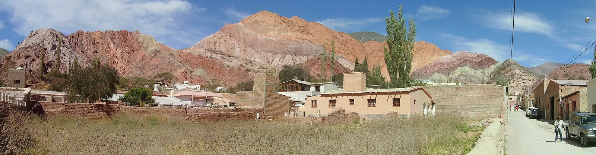

O4 · Oeste
O4 · Westen
O4 · West
Cerro de los Siete Colores
Vi el cerro de los Siete Colores: millones de años de mar, de barro y de hierro apilados en capas: te juro que vi un arcoíris incrustado en la piedra.
Ich sah den Berg der Sieben Farben: Millionen Jahre Meer, Schlamm und Eisen, Schicht um Schicht gestapelt: ich schwöre dir, ich sah einen Regenbogen, eingelassen in den Stein.
I saw the Hill of Seven Colours: millions of years of sea, of mud and of iron stacked in layers: I swear to you, I saw a rainbow set into the stone.
Información
El cerro de los Siete Colores está en Purmamarca, dentro de la Quebrada de Humahuaca, un valle angosto y árido de la provincia de Jujuy, flanqueado por el altiplano de la Puna y las zonas boscosas del este.
La quebrada forma un corredor natural de 155 kilómetros de norte a sur, por donde corre el río Grande, y sigue el trazado del Camino Inca. Hay rastros de su uso como ruta de intercambio durante los últimos diez mil años: comunidades cazadoras-recolectoras prehistóricas, el Imperio Inca entre los siglos XV y XVI, y las luchas por la independencia en los siglos XIX y XX.
Information
El cerro de los Siete Colores está en Purmamarca, dentro de la Quebrada de Humahuaca, un valle angosto y árido de la provincia de Jujuy, flanqueado por el altiplano de la Puna y las zonas boscosas del este.
La quebrada forma un corredor natural de 155 kilómetros de norte a sur, por donde corre el río Grande, y sigue el trazado del Camino Inca. Hay rastros de su uso como ruta de intercambio durante los últimos diez mil años: comunidades cazadoras-recolectoras prehistóricas, el Imperio Inca entre los siglos XV y XVI, y las luchas por la independencia en los siglos XIX y XX.
Information
El cerro de los Siete Colores está en Purmamarca, dentro de la Quebrada de Humahuaca, un valle angosto y árido de la provincia de Jujuy, flanqueado por el altiplano de la Puna y las zonas boscosas del este.
La quebrada forma un corredor natural de 155 kilómetros de norte a sur, por donde corre el río Grande, y sigue el trazado del Camino Inca. Hay rastros de su uso como ruta de intercambio durante los últimos diez mil años: comunidades cazadoras-recolectoras prehistóricas, el Imperio Inca entre los siglos XV y XVI, y las luchas por la independencia en los siglos XIX y XX.
Galería
Galerie
Gallery


Fuentes
Quellen
Sources
- UNESCO, Centro del Patrimonio Mundial, Quebrada de Humahuaca — https://whc.unesco.org/en/list/1116/ consultado 2026-10-06abgerufen 2026-10-06accessed 2026-10-06